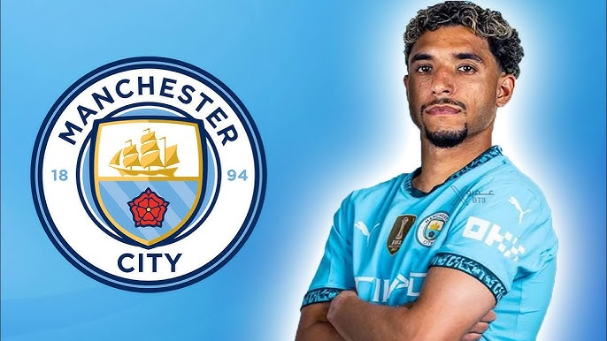

Dal Francoforte al Manchester City
Nel 2025, Omar Marmoush ha completato un trasferimento storico dal Francoforte al Manchester City, con un contratto del valore di 50 milioni di euro. Questo trasferimento ha consolidato la sua posizione come uno dei migliori giovani talenti del calcio mondiale.
Perché il Manchester City ha scelto Marmoush?
Il Manchester City ha investito su Omar Marmoush per diversi motivi. In primo luogo, la sua versatilità in attacco lo rende una risorsa preziosa: è capace di giocare sia come ala che come attaccante centrale. In secondo luogo, Marmoush ha dimostrato una straordinaria capacità di adattamento, passando con successo dal campionato egiziano alla Bundesliga tedesca, e ora alla Premier League.